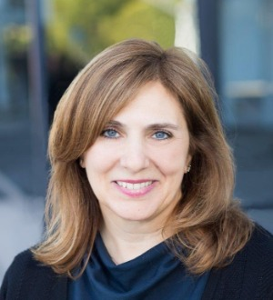
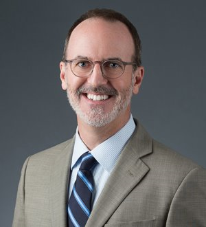
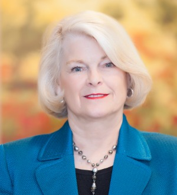
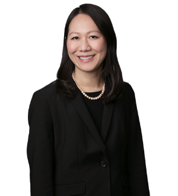

Fausta M. Albi

Larrabee Albi Coker LLP
Recognized Since: 2009
Recognized in: Immigation Law
Website: https://www.larrabee.com/fausta-albi-immigration-law-attorney/
Languages: French, Italian, Spanish
Location: 9920 Pacific Heights Boulevard, Suite 300 P.O. Box 919016 San Diego, CA 92191-9016
Description: As a Co-Managing Partner of LARRABEE ALBI COKER LLP, Fausta shares responsibility for all aspects of Firm management, direction and oversight; provides legal counsel on immigration matters to corporate clients, universities and research institutes, and individuals; monitors changes in immigration laws, agency regulations and policies; and liaises and corresponds with various U.S. government agencies. A child of immigrants from the region of Calabria in Southern Italy, Fausta had first-hand experience in the challenges and benefits of assimilating traditional Italian culture and familial expectations with the independent culture and diverse opportunities of the United States. An appreciation of languages and cultures fostered since childhood developed into an interest in international human rights, global socio-economic and political issues, and social service.
James D. Alexander
Maggio Kattar Nahajzer + Alexander, P.C.
Recognized Since: 2013
Recognized in: Immigation Law
Law School: American University
Website: https://maggio-kattar.com/
Languages: French, Spanish
Location: 1800 Massachusetts Avenue, NW, Suite 300 Washington, DC 20036
Description: James Alexander is a Managing Shareholder at Maggio + Kattar. Jim is committed to upholding the firm's international reputation for creative thinking and legal excellence across a wide variety of disciplines within the practice of immigration law.Jim is a nationally recognized expert in a wide variety of highly specialized areas within the immigration law field including corporate compliance, such as I-9 compliance and e-Verify, complex naturalization matters, gay and HIV positive issues, as well as many areas in between. Jim approaches each case with his breadth of expertise looking for the best possible solution to a client's immigration challenges whether it is in employment or family based immigration, removal defense, asylum or beyond.Jim assists institutional and individual clients across a wide range of industries. His clients range from large, multinational corporations with thousands of active matters to start-up enterprises that require innovative ideas in challenging situations. Jim's corporate clients come from a diverse industry group and include companies within the finance, aviation, defense and technology fields.Jim is a frequent lecturer at international, national and local events for the American Immigration Lawyers Association (AILA), the District of Columbia Bar Association as well as other important industry organizations.In addition to his extensive public speaking and teaching commitments, Jim has authored and been quoted in numerous important publications within the immigration law community. Jim has been selected as a top lawyer in the immigration law area by national and international publications such as Who's Who Legal, Best Lawyers and Chambers USA.
Christian S. Allen

Dickinson Wright PLLC
Recognized Since: 2006
Recognized in: Immigation Law
Law School: Tulane University
Lawyer Page: https://www.dickinson-wright.com/our-people/christian-allen?tab=0
Website: https://www.dickinson-wright.com/
Phone: (248)433-7299
E-mail: callen@dickinsonwright.com
Language: English
Location: 2600 West Big Beaver Road, Suite 300 Troy, MI 48084-3312
Description: Mr. Allen focuses his practice exclusively on US immigration law and procedure, and global mobility. He joined the Dickinson Wright Immigration Group in 2013, bringing with him an established practice focusing on all aspects of nonimmigrant and immigrant sponsorship for both individual and corporate clients, in a wide variety of industries. He previously founded and managed his own successful immigration firm for more than a decade, and also directed the immigration department for another one of the largest general practice law firms in Michigan. Mr. Allen advises his clients on the full range of temporary work visa and greencard sponsorships, as well as related issues of immigration compliance (I-9, LCA, PERM, etc.), including developing corporate immigration policies. With a penchant for technology, automation, continuous process improvement, and creative problem solving, he has developed a reputation for practical business immigration law advice, communicated in plain English.
Dorothy Hanigan Basmaji

The Murray Law Group, P.C.
Recognized Since: 2006
Recognized in: Immigation Law
Lawyer Page: https://murraylawpc.com/attorneys/dorothy-hanigan-basmaji/
Website: https://murraylawpc.com/
Phone: (248)540-8019
E-mail: dbasmaji@murraylawpc.com
Language: English
Location: 31780 Telegraph Road, Suite 200 Bingham Farms, MI 48025-3409
Description: Dorothy Basmaji's practice focuses on immigration matters. She has extensive experience in seeking internal transfers for corporate employees from other countries, as well as representing corporations seeking internal transfers. Ms. Basmaji also advises executives and other business professionals regarding complex immigration regulations. She has significant experience in representing clients seeking permanent resident status on the basis of employment or their relationship to a United States citizen or permanent resident.
Elkind Alterman Harston PC
Recognized Since: 1991
Recognized in: Immigation Law
Website: https://www.eahimmigration.com/
Languages: English, Spanish
Location: Hudson's Bay Centre, Suite 700 1600 Stout Street Denver, CO 80202-5964
Description: Phil earned his bachelor's degree from the University of Colorado in 1975 and earned his J.D. from Northeastern University School of Law in 1978. He has practiced immigration law exclusively since 1985, including all aspects of business and family immigration, as well as deportation and removal defense. In recent years, he has focused primarily on representing individuals placed in removal proceedings. He has been a member of the American Immigration Lawyers Association since 1985 and served as Chapter Chair of the Colorado AILA Chapter in 1989. Phil has been selected by his peers for inclusion in The Best Lawyers of America® in the field of immigration for over ten years, and has been selected for inclusion in Colorado Super Lawyers® Editions 2006, 2007, 2008, and 2009. He is also a recipient of the Special President's Award from the Denver Bar Association for pro bono work.
M. Mercedes Badia-Tavas

Barnes & Thornburg LLP
Recognized Since: 2016
Recognized in: Immigation Law
Law School: Tulane University
Website: https://www.btlaw.com/
Location: One North Wacker Drive, Suite 4400 Chicago, IL 60606-2833
Description: Mercedes Badia-Tavas provides legal and business guidance to clients on a broad range of immigration law cases, with focus on Fortune 500 and small companies alike. Mercedes supports her firm’s offices and clients across various states on immigration employment transfers and up-to-date compliance. As an immigrant herself, Mercedes finds particular fulfillment in helping companies and individuals immigrate to the United States and participate in the American dream through startups and business transactions that also can benefit the U.S. economy. Mercedes attributes much of her practice today to her dedication to resourcefulness from years of experience, meticulous preparation and organization skills. This entails a thorough understanding of her client’s industry, operations, culture, practices and financial goals in order to lay out realistic expectations and alternative strategies, as needed. Mercedes believes in being organized in her approach and documentation as a way of helping her clients manage costs. She and her team are committed to employing systems-driven tracking, timely updates and follow-ups with clients, and being pragmatic when unexpected issues arise. Mercedes advises on a range of employment-based immigration needs, including temporary (nonimmigrant) and permanent (immigrant) visas for executives, managers, investors, professionals, aliens of extraordinary ability, and essential, specialized and skilled workers. She works hand-in-hand with clients on their corporate global mobility policies and compliance documentation regarding sponsoring foreign nationals for employment-based visa classifications. She is regularly involved in I-9 Employment Eligibility Verification (EEV) and H-1B Labor Condition Application compliance.Mercedes also provides in-house and on-site training on immigration planning for personnel transfers, immigration-related due diligence for mergers and acquisitions, consular applications, and naturalization and citizenship initiatives.
Scott Eric Bratton

Margaret W. Wong & Associates, LLC
Recognized Since: 2010
Recognized in: Immigation Law
Website: https://www.imwong.com/
Phone: (216)566-9908
E-mail: bratton@imwong.com
Location: MWW Building 3150 Chester Avenue Cleveland, OH 44114
Description: Mr. Scott Bratton is a Partner at Margaret Wong and Associates Co, LPA. His practice includes removal defense, political asylum, federal litigation, consular processing, criminal law, and assistance in business and family based visas. Mr. Bratton is an experienced litigator who practices regularly in courts throughout the United States. Mr. Bratton received his BA in Business Management from Ohio Northern University in 1993 and his JD from the University of Cincinnati College of Law in 1997. Prior to joining Margaret wong & Associates, Mr. Bratton was a partner in the law firm of Bratton & Ratliff Co., LPA. He has been named a Leading Lawyer by Inside Business Magazine on numerous occasions and an Ohio Super Lawyer. Mr. Bratton has also been selected for inclusion in the 2010-12 editions of The Best Lawyers in America in immigration law. He has practiced immigration law for over eleven years and has been the attorney of record on numerous precedent-setting cases, including Cece v. Holder, 733 F.3d 662, 675 (7th Cir. 2013) (en banc). Liao v. Rabbett, 398 F.3d 389 (6th Cir. 2005), Singh v.Gonzales, 451 F.3d 400 (6th Cir. 2006), Madrigal v. Holder, 572 F.3d 239 (6th Cir. 2009), Wu v. Holder, 561 F.3d 467 (5th Cir. 2009), and Iao v. Gonzales, 400 F.3d 530 (7th Cir. 2005), which has been discussed in numerous newspaper and law review articles.
Penni P. Bradshaw

Constangy, Brooks, Smith & Prophete, LLP
Recognized in: Immigation Law
Law School: The University of North Carolina at Chapel Hill
Website:https://www.constangy.com/
Phone: (336)271-6842
Location: 100 North Cherry Street, Suite 300 Winston-Salem, NC 27101-4016
Description: A Board-Certified Specialist in Immigration Law, Ms. Bradshaw was named in the 2004 Business North Carolina’s “Legal Elite” as the top employment attorney in North Carolina. She has been nationally recognized by inclusion in “The Best Lawyers in America” for both Immigration Law and Employment Law, and by "Chambers & Partners" and "Super Lawyers" as a leading immigration attorney. She has also been listed in Who’s Who in America, Who’s Who in American Law, and The International Who’s Who of Professional & Business Women. Ms. Bradshaw has also been a speaker on both immigration law and employment law before such organizations as the American Bar Association, the American Immigration Lawyers Association, the North Carolina Bar Association, the South Carolina Bar Association, the American Home Furnishings Association, the Georgia Employers' Association, and the North Carolina Association of Certified Public Accountants.